Creating a Legendary Item
In this guide, you will learn how to create and implement custom legendary items into your experience.
Contents
- Designing Legendary Items
- Planning Legendary Drops
- Example Legendary: Blood Drinker
- Example Legendary: Mistwalkers
- Example Legendary: Revitalising Band
- Example Legendary: Shining Bulwark
Designing Legendary Items
Legendary items are powerful items which change the way the character “feels” to play. They should encourage the player to consider different moment-to-moment gameplay loops and add variety to the experience. The combination of character abilities and a collection of unique legendary items should form a synergistic build. For example, they may encourage the player to:
- Take damage or stay on low health.
- Fight lots of enemies at once.
- Avoid taking damage.
- Focus on a particular build, like critical strikes.
- Have a drawback which must be managed (e.g., higher resource costs).
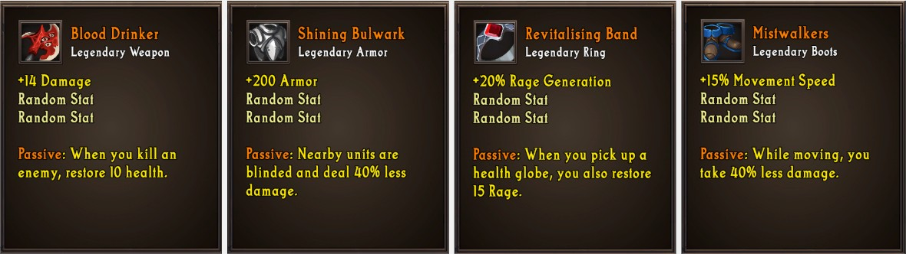
Creating these effects will often require you to code additional custom logic, beyond the standard stats that items typically have.
Planning Legendary Drops
Legendary items should be powerful, build-defining, items. Given this, you should carefully control when the player can acquire these items.
-
If you plan on having them be random drops, you should limit when they can drop. You can do this by specifying the
Min Drop Levelon the item. -
If you plan to have them drop from quests or off specific monsters, you should carefully plan when the player will acquire these items.
-
If you plan to have these items be purchased from the shop, you should carefully consider how much the player will need to pay to acquire them.
It is important that the items aren’t too rare either though. If the player is unable to finish their build and play with it before the end of the game, they will likely leave your experience unsatisfied.
Example Legendary: Blood Drinker
The first example of a legendary item is Blood Drinker, a legendary weapon. It will have a custom effect which will heal you whenever you kill a monster. Here is the logic required to set it up:
-
Add a new
Eventby pressing the+in the events header. Select theUnit > Unit is killed event.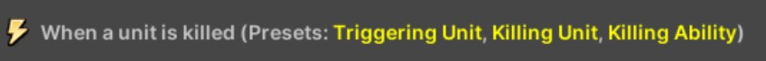
-
Add a new
Conditionby pressing the+in the events header. Select theComparisons > Unit Comparisoncondition. In the first unit block, select theKilling Unitpreset. In the second unit block, select theItem Ownerpreset.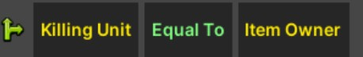
-
Add a new
Actionby pressing the blue+in the actions header. Select theUnit > Add Healthaction. In the number block, enter10.
When you are done, the final logic should look like the following:
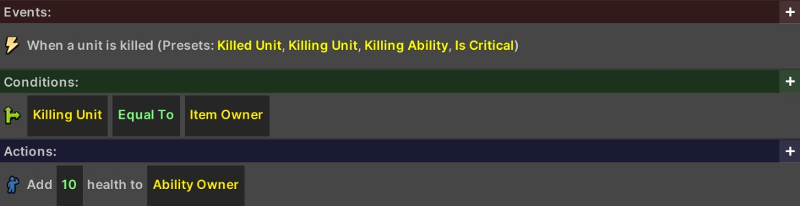
Example Legendary: Mistwalkers
The next example of a legendary item is Mistwalkers, a pair of legendary boots. It will have a custom effect which will reduce the damage you take, but only while moving. Here is the logic required to set it up:
-
Add a new
Eventby pressing the+in the events header. Select theTime > Do every X secondsevent, and then enter0.5seconds as the duration.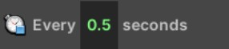
-
Add a new
Conditionby pressing the green+in the conditions header. Select theUnit > Unit is movingcondition.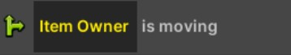
-
Add a new
Actionby pressing the+in the actions header. Select theUnit > Decrease Stat > Decrease Stat on Unit by Percentage.- In the first block, choose
Damage Takenas the stat to change. - In the second block, choose the
Item Ownerpreset for the unit. - In the third block, enter
40for the percentage. - In the fourth block, enter
1as the duration. - In the fifth block, enter
Mistwalkersas the buff name.
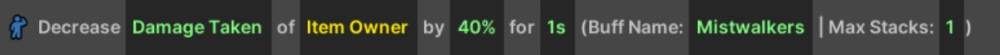
- In the first block, choose
When you are done, the final logic should look like the following:
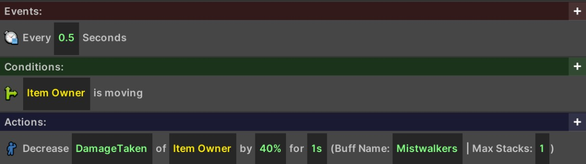
Implementation Logic
You may find that sometimes logic may seem complex, but a “close” version can be implemented much more easily. In this case, the logic periodically gives the player the buff, and then removes it if they ever move.
Example Legendary: Revitalising Band
This example will guide you to implementing the Revitalising Band legenadary. It will have a custom effect which will restore source to the player whenever they pick up a health globe. While this is a straightforward effect, it can enable high-resource builds as long as the player is constantly picking up health globes.
-
Add a new
Eventby pressing the+in the events header. Select the Player > Player picks up a health globe. -
Add a new
Actionby pressing the+in the actions header. Select the Unit > Add Resource. In the number block, enter 15.
When you are done, the final logic should look like the following:
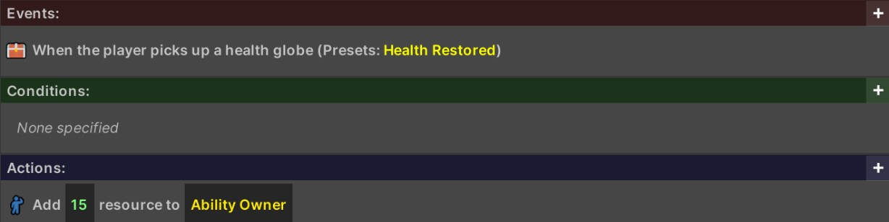
Example Legendary: Shining Bulwark
The next example of a legendary item is Shining Bulwark, a legendary armor piece. It will have a custom effect which will reduce the damage done by nearby monsters. Here is the logic required to set it up:
-
Add a new
Eventby pressing the+in the events header. Select theTime > Do every X secondsevent, and then enter0.5seconds as the duration.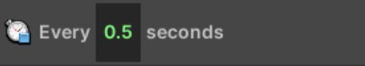
- Add a new
Actionby pressing the+in the actions header. Select theVariables > Set Unit Groupaction.- Set the
Variable NametoTargets. - Change the
Unit GrouptoAll Enemies Near Unit. Change theNumberto3and theUnitto theItem Ownerpreset. We can now refer to this variable in future calculations.
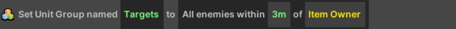
- Set the
-
Add a new
Actionby pressing the+in the actions header. Select theUnit > Decrease Stat > Decrease Stat of Unit Group by Percentaction.- Change the
Statin the first block toDamage. - Change the
Unit Groupblock toUnit Group Variable, and the variable name toTargets. - Change the
Percentblock to40. - Change the
Durationto1second. - Change the
Buff NametoSB(any name will do here).
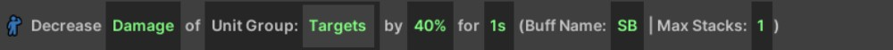
- Change the
-
Add a new
Actionby pressing the+in the actions header. Select theFeedback > Play Feedback on Unit Groupaction.- Change the first block to
Play or Refresh. - Change the effect block to
Floor Glow > Yellow Glow. - Change the
Unit Groupblock toUnit Group Variable, and the variable name toTargets. - Change the
durationto1second.
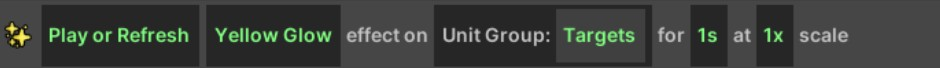
- Change the first block to
When you are done, the final logic should look like the following:
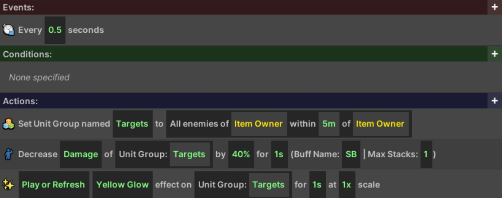